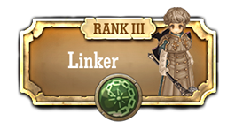
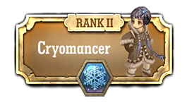

Classe Mago

Wizards usam a magia para bloquear ataques e proteger-se que eles podem lançar feitiços poderosos e concentrados , causando dano a um único alvo ou vários inimigos em uma área.
Pyromancers usam sucessiva magia bater fogo para lutar contra vários inimigos.

Linkers linka aliados em conjunto para reduzir o dano recebido , ou se conecta-a inimigos para amplificar o dano infligido
Elementalist trata-se de um Elemental que lida com o poder dos elementos.
Ele tem um poderoso ataque mágico , mas precisam de tempo para re-uso da tecnologia, por isso é importante cooperar com os colegas .
Ele tem um poderoso ataque mágico , mas precisam de tempo para re-uso da tecnologia, por isso é importante cooperar com os colegas .
Sorcerers convoca os espíritos de controle para lutar contra os inimigos , ou mesmo para usar como montagens
Alquimistas usam alquimia para melhorar gemas e sintetizar ou peças de artesanato .
Warlocks usam o poder dos espíritos malignos.
Eles podem convocar ou controlar os maus espíritos ao derrotar os inimigos .
Eles podem convocar ou controlar os maus espíritos ao derrotar os inimigos .

Cryomancers usam magia poderosa de gelo para congelar inimigos , ou proteger seus aliados de inimigos usando paredes de gelo .
Psychokinos usam psicocinese para controlar a gravidade, ou puxar inimigos e jogá-los ao redor.
Thaumaturges usam magia que alterar os atributos e tamanhos de alvos. eles podem encolher inimigos ou fortalecer aliados para ajudá-los na batalha.
Chronomancers são assistentes que controlam tempo. eles param , acelerar, ou alterar o tempo de volta para ajudar aliados
Necromantes são magos que utilizam magia que envolve os mortos. eles atacam com ou criam as criaturas invocadas , usando cadáveres recolhidos ao longo do tempo .
Featherfoots são os assistentes que absorvem a força da vida dos inimigos ou colocar maldições sobre os inimigos para fazer o combate mais fácil para seus aliados.